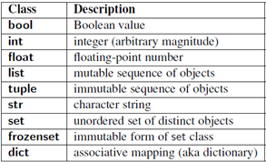

En Python, una variable es un espacio en memoria donde se almacena un valor. No es necesario declarar su tipo antes de usarla, ya que Python es un lenguaje de tipado dinámico: el tipo de dato se asigna automáticamente según el valor que se le asigne.
-
Asignación de variables
La asignación de una variable se realiza con el operador =:
x = 5 # Entero (int) y = 3.14 # Número decimal (float) nombre = "Ana" # Cadena de texto (string) activo = True # Valor lógico (boolean)
-
Objetos e identificadores
En Python, todo es un objeto: números, cadenas, listas, funciones e incluso módulos.- Cada objeto tiene un identificador único que se obtiene con type(objeto)
- Un alias ocurre cuando dos variables apuntan al mismo objeto en memoria.
a = [1, 2, 3] b = a # b es un alias de a
Modificar a también modifica b porque ambos apuntan a la misma lista. Sin embargo, al modificar b deja de ser un alias de a.
-
Tipos de datos básicos en Python
Python incluye clases predefinidas para sus tipos de datos más comunes:-
Enteros (int): números sin decimales, positivos o negativos.
Ejemplo: edad = 25 -
Flotantes (float): números con decimales.
Ejemplo: precio = 19.99 -
Cadenas de texto (str): texto encerrado entre comillas simples o dobles.
Ejemplo: mensaje = "Hola Mundo" -
Booleanos (bool): representan valores lógicos True o False.
Ejemplo: es_valido = False

-
Enteros (int): números sin decimales, positivos o negativos.
-
Buenas prácticas para nombrar variables
- Usar nombres descriptivos (temperatura, contador, usuario_activo).
- Evitar caracteres especiales y espacios; usar guion bajo _ para separar palabras.
- Comenzar siempre con una letra (no con números).
-
Conversión de tipos
En ocasiones, es necesario convertir un valor de un tipo a otro:
x = "25" y = int(x) # Convierte la cadena "25" en entero 25 z = float(x) # Convierte la cadena "25" en flotante 25.0
-
Importancia en MicroPython
En proyectos con el ESP32, las variables no solo almacenan datos numéricos o de texto, sino también objetos que representan pines de entrada/salida, sensores o actuadores, lo que permite interactuar con el hardware de forma directa.
from machine import Pin led = Pin(2, Pin.OUT)
De esta forma, manipular la variable led significa interactuar directamente con un componente físico.